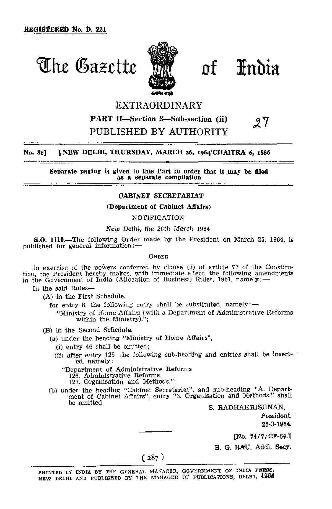

Amendment #27 (S.O. 1110, 1964)
4 changes: 1 to the First Schedule, 3 to the Second Schedule. 4 applied
The order, page by page
Page 1 of 2

1234Schedule 1 › entry 8
- Ministry of Home Affairs
- -. Department of Administrative Reforms
applied at schedule 1 › ministry 8 in the Rules after #27
states inferred number kept
Schedule 2 › Ministry of Home Affairs › entry 46
applied at schedule 2 › ministry MINISTRY OF HOME AFFAIRS › part I › group_heading The following subjects which are relatable to… in the Rules after #27
after Schedule 2 › Ministry of Home Affairs › entry 125
- Department of Administrative Reformis
- 126. Administrative Reforms.
- 127. Organisation and Methods.
applied at schedule 2 › ministry MINISTRY OF HOME AFFAIRS › part III › entry 125 in the Rules after #27
Schedule 2 › Cabinet Secretariat › Depart- ment of Cabinet Affairs › entry 3
applied at schedule 2 › ministry CABINET SECRETARIAT › department A › entry 3 in the Rules after #27
Page 2 of 2
How this document was read
Changes placed by an inference rule
| Change | Rule | Status | What |
|---|---|---|---|
| 1 | number_kept | accepted | change 1: schedule 1 › ministry Ministry of Home Affairs. keeps its number 8, the heading put for it quoted without one |
From the Government of India (Allocation of Business) Rules, 1961 and their amendments, as published by the Cabinet Secretariat (cabsec.gov.in), read by orgpedia. The readings of the older scanned gazettes have known gaps.